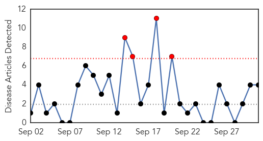
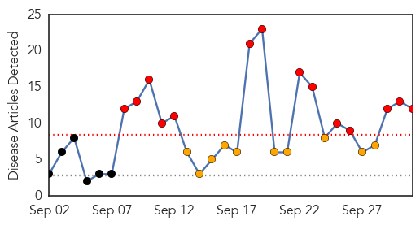

Measles
30-Day Web Trend
4 alerts, 0 warnings

30-Day Twitter Trend
0 alerts, 0 warnings

Article Locations

Article Confidences
Top Articles:
Top Tweets:
-
No tweets found for Oct 01, 2014
Influenza
30-Day Web Trend
14 alerts, 10 warnings

30-Day Twitter Trend
0 alerts, 0 warnings

Article Locations

Article Confidences

Top Articles:
- 0.999
- Extent of deadly Enterovirus D68 infections hard to track
- 0.999
- On Epidemics and Pandemics in Sierra Leone
- 0.999
- Extent of deadly Enterovirus D68 infections hard to track
- 0.997
- Getting a flu vaccine: Elementary
- 0.995
- Steele County health officials encourage residents to get flu vaccination
- 0.995
- LBREPORT.com Has Spoken With Long Beach Health Officer Dr. Michael Kusher re Long Beach Case of Enterovirus D68
- 0.994
- First case of enterovirus confirmed in Maine
- 0.986
- Sanofi Pasteur Introduces 4-Strain Influenza Vaccine in Canada
- 0.971
- Updated: Flu shots beset by delays
- 0.951
- Montgomery County Health Department holding flu vaccine clinics
- 0.900
- Ruidoso Health Office offering flu vaccinations during clinics
- 0.605
- After almost dying from H1N1, victim urges flu shots
Top Tweets:
-
No tweets found for Oct 01, 2014